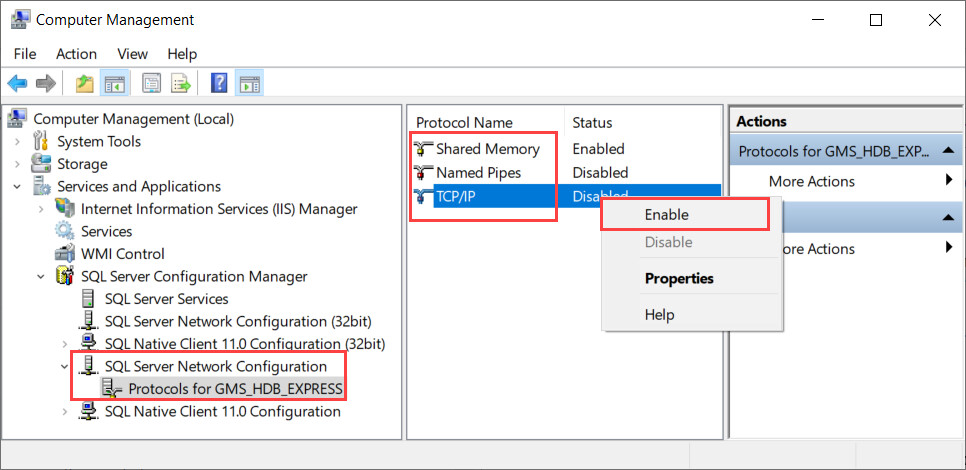
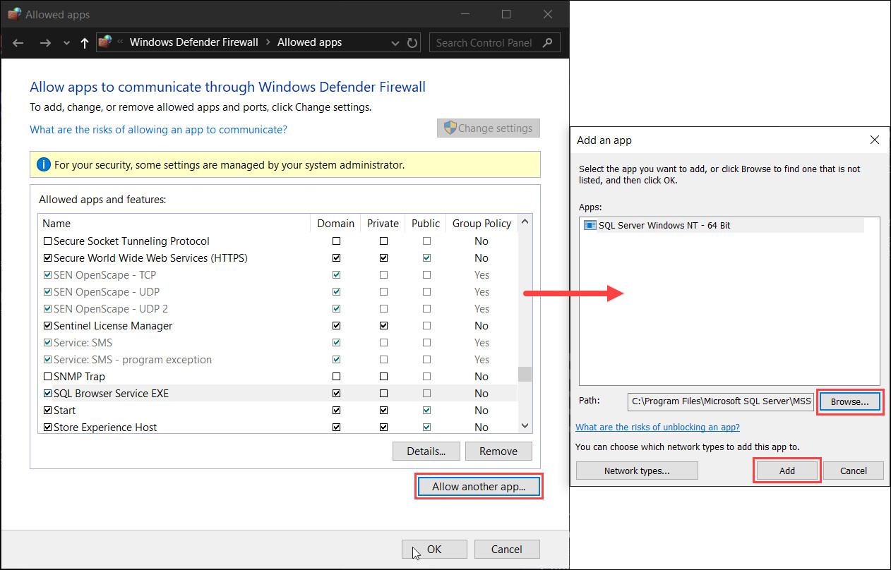
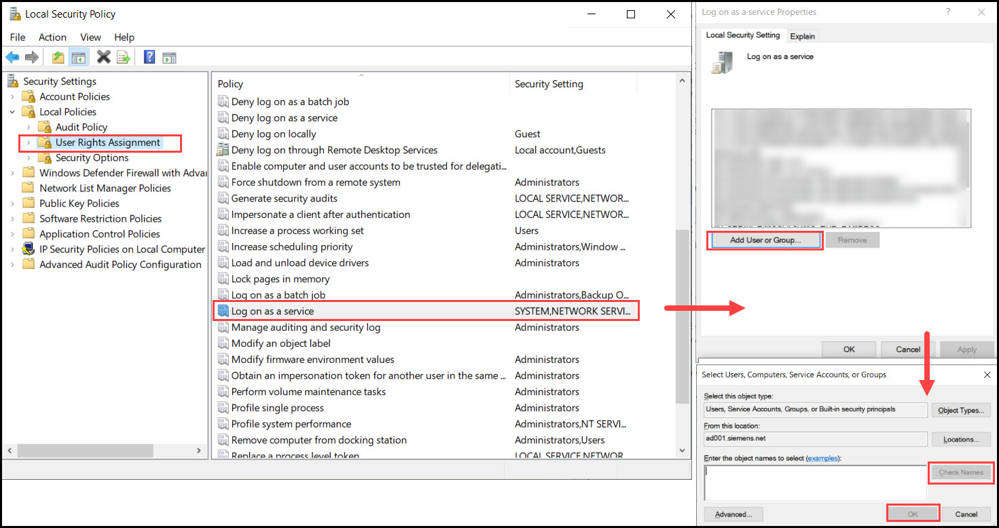
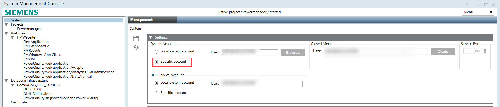
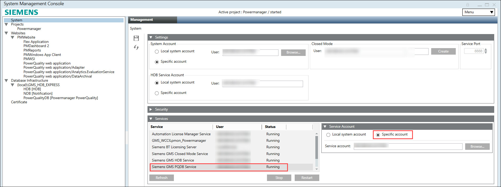

A remote PowerQuality Database in Same Domain
You have a centralized server and want to create a PowerQuality database in different system than Powermanager system.
- Powermanager system and database system are in domain.
- You have created two users in domain server with administrative rights.
For example: PM1 is domain user Powermanger system and PM2 is domain user for PowerQuality database system.
- Open system where you wish to host PowerQuality database.
For example: Login using PM2 user. - Install SQL Server, and SQL Server Management Studio (SSMS).
NOTE 1: Database system administrative rights are required to install applications.
NOTE 2: SQL Server Express 2019 edition is provided with the Powermanager setup and located at [setup folder] > DCC > GMS > Prerequisites > SQL 2019. For other supported SQL Servers, you need to download manually. See Microsoft SQL Server.
NOTE 3: Ensure Startup type for SQL Server Browser is selected as Automatic. See Enable the SQL Server Browser
NOTE 4: SQL authentication is not supported. - Open SQL Server Management Studio, and connect to server.
- Under Object Explorer navigate to [SQL Server] > Security > Logins.
- Add windows user of Powermanager system, and assign Server Roles as sysadmin.
For example: add PM1 Powermanager system user. - Navigate to Start > Windows Administrative Tools > Computer Management.
- Computer Management window appears.
- Navigate to Services and Applications > SQL Server Configuration Manager > SQL Server Network Configuration > Protocol for [SQL name].
- Ensure Shared Memory, Named Pipes and TCP\IP are enabled.

- Navigate to Start and search for Allow an app through Windows Firewall.
- Allow apps to communicate through Windows Defender Firewall window appears.
- Click Change Settings.
NOTE: Database system administrative rights are required to perform this step. - Click Allow another app.
- Add an app window appears.
- Click Browse.
- Select below mentioned files one after another.
- Select the file C:\ProgramFiles\MicrosoftSQLServer\<version_InstanceName>\MSSQL\Binn\sqlservr.exe.
- Select the file C:\ProgramFiles(x86)\MicrosoftSQLServer\90\Shared\sqlbrowser.exe. - Click Add and select Domain checkbox for both the files.
- Click OK.

- Create an Inbound-outbound rule. For more information, see Creating Inbound and Outbound Rule for Remote Database.
- Navigate to drive where you wish to host database and create a new folder named GMSDatabases.
- Open GMSDatabases and create another new folder named Backups.
- Open Backups and create another new folder named RecoveryLog.
- Open Powermanager system.
For example: Login using PM1 user. - Navigate to Start > Windows Administrative Tools > Local Security Policy.
- Local Security Policy window opens.
- Navigate to Security Settings > Local Policies > User Rights Assignment > Log on as a service.
- Open Log on as a service and select Add User or Group.
- Enter the database user name and click on Check Names.
For example: enter PowerQuality database (PM2) credentials. - Click OK.

- Open SMC, and select Database Infrastructure.
- Click Scan Network and select SQL server installed at step 2.
- Click Link
 .
. - Select System node.
- Navigate to Settings > System Account, select Specific account.

- Click Browse.
- Select User window appears.
- Click Other Domains, select domain and search for windows user of database system, and click OK.
For example: Select PM2 user of database system. - Enter Password for select user.
- Navigate to Services expander and select Siemens GMS PQDB Service.
- Under Service Account expander, select Specific account.

- Click Browse.
- Select User window appears.
- Click Other Domains and select domain and search for windows user of database system.
For example: Select PM2 user of database system. - Enter Password for the login user of database.
- Click Apply.
- Click Save
 .
. - Navigate to Database Infrastructure > [SQL Server from database system].
- Click Create
 and select Create Powermanager PowerQuality Database.
and select Create Powermanager PowerQuality Database. - Enter DB name, and select Database size.
NOTE: Ensure DB Owner and DB User are not same. - Click Save .
- Remote PowerQuality Database created successfully.